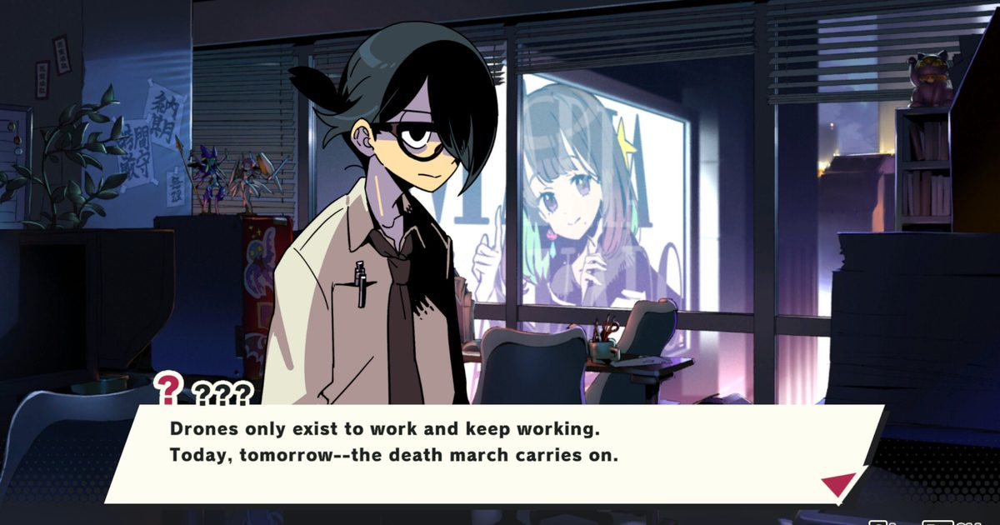

2026-10-23 · 玩法深读
《DEMONS' NIGHT FEVER》（恶魔们的夜热）本周登陆 PS5、Nintendo Switch 与 Steam，39.99 美元。 阵容很值得看一眼：《魔界战记》之父新川宗平（Sohei Niikawa）的 SuperNiche 主导、Drecom 开发、Arc System Works 发行。 你扮演一个厌世的「片中（Killshiro Katanaka）」，被一只退化成婴儿的魔王拽进一场复活的仪式里。 但真正让这部作品值得单独写一篇的，不是「Disgaea 之父又做战棋了」，而是它动了战棋这个品类三十年来最底层、也最少被质疑的那条契约——单位是拿来保住的。 本作把它改成了：单位是拿来烧掉的。

这套系统的名字翻译过来大约叫「杂兵榨取系统」，官方与媒体的描述高度一致：
注意最后一条。它不是「允许你牺牲」，也不是「牺牲有代价」，而是把牺牲速度设成了可优化的效率指标。 新川宗平自己给这部作品起的类型名非常说明问题——他称之为「养成 + 速通模拟 RPG（raising speedrunning simulation RPG）」。 把 speedrun 那套「这一回合能不能再省两秒」的思维，塞进一支军队的养成里，这个组合在战棋里我没见过第二次。
这是我认为整部作品最关键、也最少被讲清楚的一步。
如果单位是燃料，玩家的阻力首先不是战术难度，而是内疚。你会本能地想保住他们，因为三十年的战棋训练都在告诉你：单位死了是失败。 所以新川必须先解决一个叙事问题——怎么让玩家烧自己人不觉得难受。
他在接受 Automaton 采访时说得非常直白：「我们把作为敌对势力的神，做成了极度讨厌的角色。这个游戏里的神是个彻头彻尾的人渣。我们把故事写成让玩家觉得『我绝对要干掉这家伙』。」
配套的两处设计也很整齐：你服务的魔王是个无害的婴儿，而对立的天道阵营既正当又令人反感。 道德宇宙被干净地翻转了一遍，你永远不会被要求为享受它而内疚。
我把这个顺序叫做「机制成立的前提，是叙事先把道德成本清零」。 这是一个很少被明确说出来的设计次序：不是先有玩法再补剧情，而是先算出玩法需要玩家放弃什么，再让剧情去把那份代价提前支付掉。 想知道一部「反道德」玩法的作品能不能成立，先看它有没有做这一步——没做的，多半会变成玩起来别扭的噱头。
这个机制的代价，在首批评价里已经看得很清楚。
把这些串起来看，它们其实指向同一个根源：当单位从「需要保护的资产」变成「需要花掉的资源」，一场战斗里真正需要权衡的层数就变少了。 传统战棋的每一回合都在做取舍——这一格会不会暴露、这个单位要不要后撤、治疗给谁。 而当消耗本身是收益，最优解往往很明确，剩下的就是执行的熟练度。 这就是为什么两位 Famitsu 评审会在夸完概念之后，紧接着说「有点繁琐」。
把这句话放进品类里看，会更清楚它到底新在哪：
| 作品 | 单位的性质 | 消耗意味着什么 | 玩家的核心情绪 |
|---|---|---|---|
| 《火焰纹章》系列 | 有名字的人 | 永久损失，是惩罚 | 心痛、谨慎 |
| 《魔界战记》系列 | 可举起投掷的道具 | 工具化，但单位仍存续 | 得意、玩坏规则 |
| 《Into the Breach》 | 保护建筑的一次性机甲 | 可以牺牲，但目标仍是「少牺牲」 | 精密计算 |
| 《皇家骑士团》系列 | 编制内的兵 | 可损失，但影响战功与评价 | 调度感 |
| 《DEMONS' NIGHT FEVER》 | 燃料 | 消耗速度本身就是收益，且会转生变强 | 背德感的快感 |
这张表的最后一行才是它的原创性所在：前四种里，「少损失」始终是隐含目标；本作第一次把「多消耗」写成了效率。 Famitsu 那位评审的原话是——用全灭式自爆锁定一场翻盘胜利时的背德感，简直棒极了。 这种情绪在战棋里基本是全新的。
顺带一提：Arc System Works 今年秋天还发行了《Qliphah in Providence's Shadow》（本站 9 月 7 日写过），同样是「小体量 + 一个非常怪的核心机制」。 这家公司正在发行侧做一件有意思的事：不去抢大作，而是专门策展那种「一句话就能讲清怪在哪」的实验。 这对玩家是好事——这种作品在别处通常活不到上架。
我们的评分（两条）：
我们的观察：
最值得注意的是「道德免责」这一步做得有多彻底。 很多号称「让你做坏人」的游戏，其实只是把敌人画得丑；本作是把雇主写成婴儿、把对手写成讨厌的人、把被烧掉的单位写成会自动升级的资源——三条同时成立，内疚才真正清零。 这是一整套工程，不是一句设定。
我们的观点：
这部作品不需要成为《火焰纹章》，Final Weapon 那句「它不是《火纹》，也不需要是」说得对。 但我认为它真正的问题在别处：它把「效率」引入战棋，却没有为效率提供足够深的优化空间。 速通之所以迷人，是因为省下的每一秒都有明确的反馈；而在本作里，烧得快之后的反馈是「更强」，是一个会被数值稀释的结果。 如果续作要做，方向不是加更多杂兵，而是让「怎么烧」产生分歧——烧谁、什么时候烧、烧在哪个位置，只要这三个问题有不同答案，这套系统就能从流程变回战术。
我们的案例 / 对比（一句话版）：
我们的实验（打完前三章值得记录的两个数字）：
给一个明确的建议，不绕：
最后一句话：这部作品最值得记住的不是「可以炸自己人」，而是它证明了战棋那条三十年的隐性契约是可以撕的。 撕完之后它自己没走完第二步——那是续作的事。但契约一旦被撕过一次，后面的作品就都轻松了。